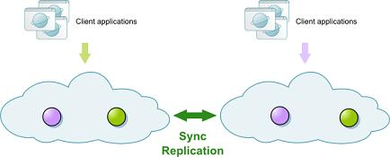
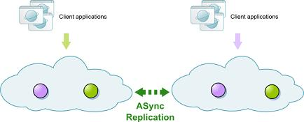
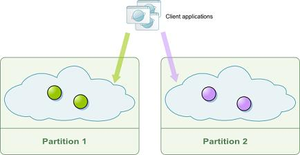
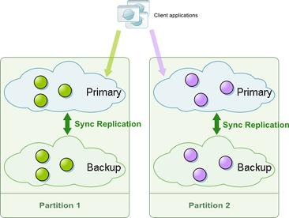

Section Summary: Overview of GigaSpaces in-memory data grid - how to create a data grid, connect to it, and interact with it.
Overview
This section covers the main APIs of GigaSpaces XAP. It explains how to:
- Instantiate a data grid (a Space) programmatically, via Spring or by deploying onto the service grid.
- Connect to the Space to gain access to it using the core GigaSpaces API, the Map API, or other APIs.
- Read data from the Space and write data to it, using the core GigaSpaces API.
Classpath Settings for Development and Runtime
To compile and run code that interacts with the Space from within the IDE, you should include all the JARs under the <GigaSapces root>/lib/required directory in your build path (i.e. a total of thirteen JARs - com.springsource.org.aopalliance-1.0.0.jar, commons-logging.jar, gs-openspaces.jar, gs-runtime.jar, org.springframework.aop-3.0.3.RELEASE.jar, org.springframework.asm-3.0.3.RELEASE.jar, org.springframework.aspects-3.0.3.RELEASE.jar, org.springframework.beans-3.0.3.RELEASE.jar, org.springframework.context-3.0.3.RELEASE.jar, org.springframework.context.support-3.0.3.RELEASE.jar, org.springframework.core-3.0.3.RELEASE.jar, org.springframework.expression-3.0.3.RELEASE.jar, org.springframework.transaction-3.0.3.RELEASE.jar, for XAP 8.0.0-m6).
If you run your Space client as a Processing Unit within the GigaSpaces runtime environment, GigaSpaces classes and interfaces are part of the JVM's classpath by default. If you run in standalone mode (from within your IDE or non-GigaSpaces JVM), you should include the above thirteen JARs in your classpath.
| If you're running Java 6, you can use a shorthand to include directories of jars: java -classpath /installation/lib/required/*.jar mypackage.myClass, for example. |
Space Cluster Schemas
A Space is identified by its name, and is comprised of one or more Space instances, which form the Space cluster. The Space instances interact with one another, based on the Space topology defined for the Space. The topology is defined using a cluster schema, and the following schemas are provided out-of-the-box:
- sync_replicated - defines a replicated cluster with synchronous replication between Space instances.

- async_replicated - defines a replicated cluster with asynchronous replication between Space instances.

- partitioned-sync2backup - defines a partitioned cluster with zero or more backups for each partition. Replication between primaries and backups is synchronous.
Examples:
A partitioned cluster with zero backups:
A partitioned cluster with one primary and one backup for each partition:

| For details about scaling a running space cluster in runtime see the Dynamic Partitioning section. |
The Space cluster is typically accessed from a remote JVM. Alternatively, applications that are collocated on the same JVM with a Space instance can access that instance locally without being exposed to the other instances (this is useful for implementing SBA applications).
Instantiating a Space
The Space can be instantiated in a number of ways:
The first way, you deploy a Space onto the GigaSpaces Service Grid infrastructure (using the management GUI, the CLI or the administration and monitoring API).
In the second way of instantiating a space, you create a processing unit that contains an embedded Space, and deploy it onto the GigaSpaces Service Grid infrastructure (using the management GUI, the CLI or the administration and monitoring API).
The last two ways of instantiating a space are from within your application's code using Spring, or from within your application's code. In both these cases, you have to manually start each Space instance.
Deploying a Space onto the Service Grid Infrastructure
The service grid infrastructure is composed of one or more GigaSpaces Containers (GSCs) and at least one GigaSpaces Manager (GSM). When deploying onto the service grid, the deployment tool you use connects to the GSM and instructs it to provision Space instances to the running GSCs, based on the deployment details (Space topology, number of instances, etc.).
After starting the appropriate amount of GSCs and GSMs in your cluster (note that as of version 7.0 you can use The GigaSpaces Agent for this), there are a number of tools that can be used to deploy a Space onto the service grid:
Deploying a Space Using the Management UI
1. Start the GigaSpaces Agent by running <GigaSpaces root>/bin/gs-agent.sh(bat) on the machines on which you would like to deploy the clustered space.
2. Start the management UI by running <GigaSpaces root>/bin/gs-ui.sh(bat).
3. Click the Deploy In-Memory Data Grid button (top left, second button).
4. In the dialog box that opens, fill in the data grid name, number of instances/backups, the cluster schema (which defines the Space topology), and any other relevant details. Four examples are shown below.
5. Click Deploy.
Deploying a Space Using the CLI
1. Start the GigaSpaces Agent by running <GigaSpaces root>/bin/gs-agent.sh(bat) on the machines on which you would like to deploy the clustered space.
2. Use the the GigaSpaces CLI by starting <GigaSpaces root>/bin/gs.sh(bat).
gs deploy-space -cluster [schema=<cluster schema>] total_members=<number of instances>[,<number of backups>] <Space name>
Examples:
Sync-replicated cluster with 2 nodes:
gs deploy-space -cluster schema=sync_replicated total_members=2 mySpace
A-sync-replicated cluster with 2 nodes:
gs deploy-space -cluster schema=async_replicated total_members=2 mySpace
Partitioned cluster with 2 nodes and a backup for each node:
gs deploy-space -cluster schema=partitioned-sync2backup total_members=2,1 mySpace
To see the full list of options available with this command, refer to this page.
Deploying a Space Using the Administration API
Admin admin = new AdminFactory().addGroup("myGroup").createAdmin(); ProcessingUnit processingUnit = admin.getGridServiceManagers(). deploy(new SpaceDeployment("mySpace").numberOfInstances(2).numberOfBackups(1)); //wait for the instances to start Space Space = processingUnit.waitForSpace(); Space.waitFor(4);
Refer to the admin API documentation for more details.
Creating and Deploying a Processing Unit onto the Service Grid Infrastructure
By using processing units, you can deploy full-blown applications onto the service grid, and leverage on the Space's messaging and code execution capabilities, such as remoting and task execution. This allows you to execute the business logic close to the Space instance for the best possible performance.
A processing unit can define an embedded Space in the processing unit's pu.xml file. The pu.xml file is, in effect a Spring XML configuration file, and you simply define the Space using GigaSpaces namespace extensions, or using plain Spring format. Here is an example:
<os-core:space id="space" url="/./mySpace"/>
This defines an embedded Space within the processing unit. The fact that the Space is embedded is determined by the url property. As you can see below, a URL that starts with the jini:// prefix, indicates that a connection to a remote Space is created, not an embedded Space.
Note that the cluster schema and number of instances are defined inside the processing unit's SLA definitions (typically within the sla.xml file), to allow for seamless transition between your local development environment and the actual runtime environment. Here is an example of an SLA definition within the sla.xml file:
<os-sla:sla cluster-schema="partitioned-sync2backup" number-of-instances="2" number-of-backups="1"/>
Refer to this page for more details on how to configure the Space component, and to this page for more details about the SLA definitions.
Once packaged, the processing unit can be deployed onto the service grid using one of the deployment tools (UI, CLI, admin API).
Refer to this page for more details on how to deploy your processing unit onto the service grid.
Creating the Space via Spring
If you would like to create a Space within your own Spring application, and do not wish to deploy it as a processing unit onto the GigaSpaces service grid, you can create an embedded Space instance within the application's JVM much the same way you would do in a regular processing unit configuration. The main difference with this approach is that when deploying on to the service grid, the GSM automatically starts the right amount of Space instances for you, and assigns the instance ID to each of the instances.
When creating the Space instance in your own application, you have to provide the instance ID on your own, as described in the Space URL section. Therefore this option is not recommended for large Space clusters.
<os-core:space id="space" url="/./mySpace?total_members=2&id=1"/>
Creating the Space Programmatically
The last option is to create the Space Programmatically from within a plain Java application. Note that this option has the same limitation as creating the Space in your standalone Spring application, namely you have to start each of the instances separately and provide the instance ID to each of the started Space instances. Here is an example of starting the first instance of a sync-replicated Space with 10 instances:
ClusterInfo clusterInfo = new ClusterInfo("sync-replicated", 1, null, 10, null); IJSpace space = new UrlSpaceConfigurer("/./mySpace").clusterInfo(clusterInfo).space();
Refer to this page for more details on how to configure the Space component programmatically (click the Code tabs in all of the examples).
Accessing the Space
The handle to the Space is represented by the low level IJSpace interface. When creating the Space in one of the above ways (programmatically, via Spring or within a processing unit), you get a handle to the local Space instance within your JVM.
If you are connecting to the Space from a remote JVM, you can use all of the above methods, with the exception that the Space URL you should use is a remote URL (using the jini:// discovery protocol), and you don't have to specify the clustering topology or the instance ID (since your code in that case does not create the Space, it simply connects to an already running Space).
Here is an example of how you would do this programmatically, or via Spring configuration (from within a processing unit or a plain Spring application):
Spring Configuration (NameSpace)
<os-core:space id="space" url="jini://*/*/mySpace" />
Spring Configuration (Plain)
<bean id="space" class="org.openSpaces.core.Space.UrlSpaceFactoryBean"> <property name="url" value="jini:/*/*/mySpace" /> </bean>
Java Code
IJSpace space = new UrlSpaceConfigurer("jini://*/*/mySpace").space();
Although you can access the Space directly via the IJSpace interface (which was the mainstream approach until version 6.0), it is much more recommended to access the Space via one of the higher level APIs, namely the org.openSpaces.core.GigaSpace interface, the Map API, or the JDBC API.
All of these APIs are built on top of the lower level IJSpace interface. With the GigaSpace and GigaMap interfaces, you simply create an IJSpace instance as described above (embedded or remote) and then wrap it with one of the higher level constructs, namely GigaSpace, GigaMap or JDBC API (all of this can be done either programmatically or via Spring). With the JDBC API, you use the GigaSpaces JDBC driver directly.
The most recommended API is the GigaSpaces interface. It is the closest to the older IJSpace interface, but is different since it supports Java 5 generics, declarative Spring transactions and task execution over the Space.
Historically, both the GigaSpace and IJSpace interfaces are based on the JavaSpaces specification and the tuple Space model.
They support 4 basic "verbs" of this model, namely read, write, take and notify (see below for more details).
The org.openSpaces.core.GigaSpace interface differs from the classic JavaSpaces model in a number of ways:
- It works with POJOs rather than Entry classes, and is far less intrusive to the cached objects
- It supports Java 5 Generics
- It supports batch operations
- It supports asynchronous operations
- It supports task execution over the Space
- It is Spring-enabled, which means it automatically joins Spring-managed transactions (declarative or programmatic) and uses the Spring DataAccessException as a base class for all the exceptions that are thrown when something goes wrong.
- It does not implement the net.jini.Space.JavaSpace interface, and therefore does not enforce any of its restrictions.
Interacting with the Space Using the GigaSpace Interface
The rest of this page describes the GigaSpace interface, and how to perform basic data access operations with which to access the Space.
If you are interested in the Map API, refer to the following pages:
For details about the JDBC API, refer to this page.
However, it is recommended that you familiarize yourself with the GigaSpace interface before moving on to the other APIs.
Basic Data Access Space Operations
The GigaSpace interface supports a number of Space operations:
- Read: Enables you to read objects from the Space. The criteria can be specified via one of the following:
- Template matching (JavaSpaces term for the equivalent of Hibernate's Example API.
- SQL-like queries.
- Based on a certain object's ID (every object in the Space has a unique identifier which distinguishes it from other objects).
As per the JavaSpaces model, when you read an object from the Space, you can specify a timeout for the read operation. This means that the calling code can block until a certain object is written to the Space, which allows for much more sophisticated communication patterns that use the Space as a collaborative work area between multiple Space clients.
At the API level, the GigaSpace interface contains a number of options to read data. You can read a single object (read() methods), you can read a batch of objects (readMultiple() methods), or read an object by its ID (readById() methods and readByIds() methods).
It also enables you to read objects asynchronously, using the (asyncRead() methods).
- Write: Enables you to write instances to the Space, or update existing instances in it. When you write an instance to the Space, you can specify a lease for that instance. The lease determines how long the object will live in the Space. Once the lease expires, the object is automatically cleared from the Space.
- Take: The take operation is similar to the read operation, but instead of just returning the read data to the client, it actually removes it from the Space. The take operation also supports a timeout argument (also referred to as a blocking take). A blocking take is used as the foundation for point-to-point messaging capabilities of the Space (for more details refer to this page).
As with the read operation, the GigaSpace interface also supports asynchronous, ID-based, and batch take operations.
- Clear: Removes the matched object(s) from the Space, but does not return them to the client like the take operation. Use this operation when you would like to delete certain objects from the Space, but your application does not need to access the removed objects. In general, the clear operation is a bit faster than take, since it does not return anything to the client.
| Using the Space as a Messaging Bus The Space can also be used to deliver events (messages) to your application. This is based on its ability to support blocking operations, and the Space's built-in notification API. This section only deals with the data access aspects of the Space. Refer to this section for details about the Space's messaging capabilities. |
Creating a GigaSpace Instance
Creating a GigaSpace instance is done by wrapping an existing IJSpace instance, or by providing details about the Space you would like to connect to. This can be done programmatically, or via Spring. Here is an example:
Spring Configuration (NameSpace)
<os-core:space id="space" url="jini://*/*/mySpace" /> <os-core:giga-Space id="gigaSpace" space="space"/>
Spring Configuration (Plain)
<bean id="space" class="org.openSpaces.core.Space.UrlSpaceFactoryBean"> <property name="url" value="jini:/*/*/mySpace" /> </bean> <bean id="gigaSpace" class="org.openSpaces.core.GigaSpaceFactoryBean"> <property name="Space" ref="space" /> </bean>
Java Code - Option 1
IJSpace space = new UrlSpaceConfigurer("jini://*/*/mySpace").space(); GigaSpace gigaSpace = new GigaSpaceConfigurer(space).gigaSpace();
Java Code - Option 2
GigaSpace gigaSpace = new GigaSpaceConfigurer(new UrlSpaceConfigurer("jini://*/*/mySpace")).gigaSpace();
Once you have access to a GigaSpace instance, you can start operating on the Space, namely write objects to it, and read and take objects from it.
| Cleaning up resources after using the space There are two types of resources associated with space instances and space clients.
|
Space Operations
Writing Objects to the Space
In order to write or update objects in the Space, you should use the write method of the GigaSpace interface. The write method is used to write objects if these are introduced for the first time, or update them if these already exist in the space. In order to override these default semantics, you can use the overloaded write methods which accept update modifiers such as UpdateModifiers.UPDATE_ONLY.
Here is an example of writing an instance of the above Data class to the space:
Person person = new Person(); person.setName("foo"); person.setLastName("bar"); person.setAge(25); gigaSpace.write(person);
The GigaSpace interface also supports writing objects in batches. The corresponding methods for this are named writeMultiple, and are mainly used to batch operations over a single network call in case you write to a remote space.
Note that you can specify a lease when writing objects to the space. This determines how long the object is stored in the space before it is discarded (by default, Lease.FOREVER is used).
Reading Objects from the Space
The read methods are used to retrieve objects from the Space. The read method returns a copy of the matching object to the client. To read more than one object, you should use the readMultiple methods of the GigaSpace interface. To define the criteria for the operation, all of these methods accept either a template object, or an SQLQuery instance. A template object is an example object of the class you would like to read. For an object in the space to match the template, each of the non-null properties in the template must match its values for these properties.
 To simply read an object by its ID, you should use one of the readById/readByIds methods.
To simply read an object by its ID, you should use one of the readById/readByIds methods.
Here is an example for reading with a template, and by id:
// readById Integer id = ...//get the id Integer routing = ...//get the routing value (not mandatory, but more efficient) Person result1 = gigaSpace.readById(Person.class, id, routing); //second argument determines routing // readByIds Integer[] ids = new Integer[] { ... // object ids Integer[] routingKeys = new Integer[] { ... // get the routing keys values (not mandatory, but more efficient) ReadByIdsResult<Person> result = gigaSpace.readByIds(Person.class, ids, routingKeys); for (Person person : result) { // ... } //template matching Person template = new Person(); template.setFirstName("foo"); template.setLastName(null);//means any value Person result2 = gigaSpace.read(template) ; // read by template //50 is the maximum number of results to retrieve Person[] multipleResults = gigaSpace.readMultiple(template, 50); //SQLQuery SQLQuery<Person> query = new SQLQuery<Person>("(name = ?) AND (age>? AND age<?)"); template.setParameters("foo" , 25 , 30); // returns all Person objects whose name is 'foo' and age between 25-30 (non-inclusive) Person[] multipleResults2 = gigaSpace.readMultiple(query, 50);
Note that you can specify a timeout for the read operations. This causes the calling code to block until a result becomes becomes available (or until the specified number of results is available in the case of readMultiple).
In general, SQLQuery is more powerful than template matching, at the price of a slightly slower performance due to the parsing that needs to take place before the query can be executed.
Taking Objects from the Space
The take methods have similar method signatures as the read methods. The main difference is that take removes the object from the Space, in addition to returning a copy of it to the client.
As with read, the take operation can also specify a timeout value.
// takeById Integer id = ...//get the id Integer routing = ...//get the routing value (not mandatory, but more efficient) Person result1 = gigaSpace.takeById(Person.class, id, routing); // takeByIds Integer[] ids = new Integer[] { ... // object ids Integer[] routingKeys = new Integer[] { ... // get the routing keys values (not mandatory, but more efficient) TakeByIdsResult<Person> result = gigaSpace.takeByIds(Person.class, ids, routingKeys); for (Person person : result) { // ... } //template matching Person template = new Person(); template.setFirstName("foo"); template.setLastName(null);//means any value Person result2 = gigaSpace.take(template) ; // take by template //50 is the maximum number of results to take Person[] multipleResults = gigaSpace.takeMultiple(template, 50); //SQLQuery SQLQuery<Person> query = new SQLQuery<Person>("(name = ?) AND (age>? AND age<?)"); template.setParameters("foo" , 25 , 30); // returns all Person objects whose name is 'foo' and age between 25-30 (non-inclusive) Person[] multipleResults2 = gigaSpace.takeMultiple(query, 50);
Ordering of Results
The Space matches the stored object with the template to return a result. Matched objects are stored in the Space and returned from it in no particular order. However you can use FIFO ordering or the ORDER BY statement to control the ordering.